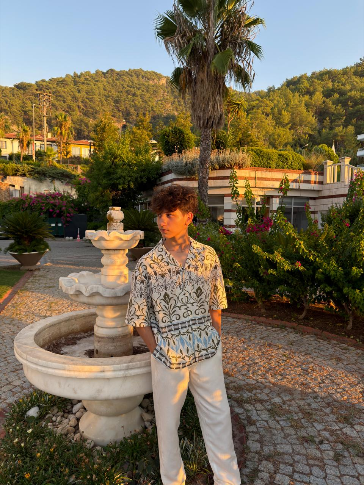
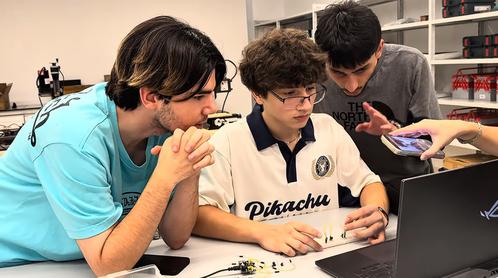

3
Certificates
Web design, web development, and Python / Python Turtle

PERSONAL WEBSITE
I'm a university student at ADA University with a strong interest in technology, programming, and continuous learning. I'm passionate about exploring new ideas, developing my skills, and challenging myself to grow both academically and personally.
I enjoy working on projects, solving problems, and discovering how technology can shape the future. My goal is to keep learning, gain practical experience, and turn my interests into meaningful achievements.
Always learning. Always building. Always moving forward.
3
Web design, web development, and Python / Python Turtle
2020
4th
4
Game development, cybersecurity, chess, and reading
Interests
An area I enjoy and want to keep learning more about.
An area I enjoy and want to keep learning more about.
An area I enjoy and want to keep learning more about.
Milestones
Earned certificates in web design, web development, and Python / Python Turtle.
Took part in Code Fest and finished in 4th place.
Studying Mathematics and building this website for SITE 1101.
Featured work

Project 1: Logic Gates I learned about breadboards and built AND, OR, XOR, and NOT gates. See my projects